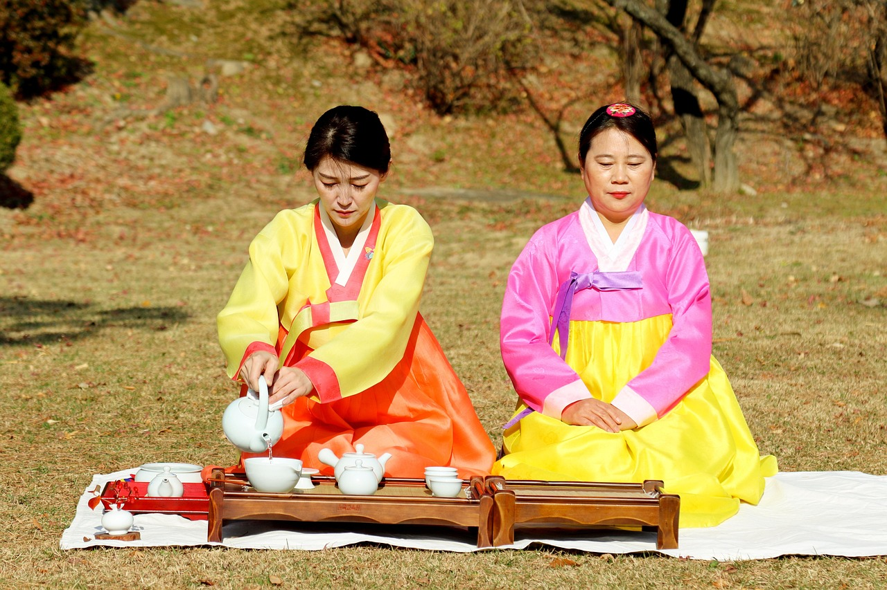
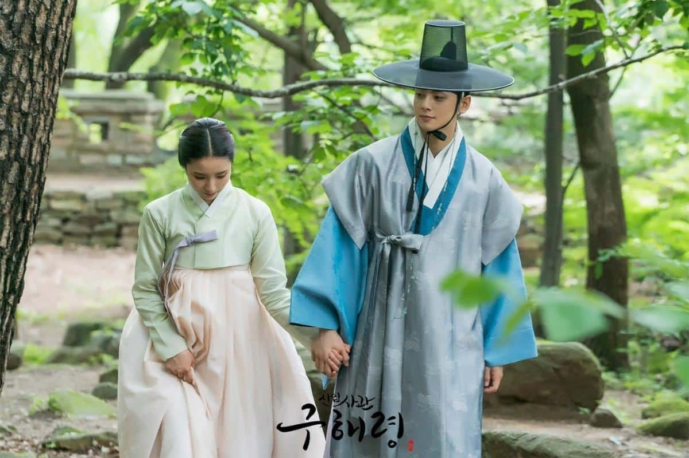

Hanbok

El hanbok (한복) es el vestido tradicional coreano usado desde la antigüedad. El estilo se remonta a la era de la dinastía Joseon a fines del siglo XIII, pero algunos investigadores afirman que su origen pudiera ser mongol o siberiano. Habiendo caído en desuso en la década de 1960, el hanbok es ahora usado como vestido ceremonial o en ocasiones particularmente formales.
Como se hacen los hanbok
La versión femenina se compone principalmente de dos partes: una falda ancha (치마, chima) que llega hasta los pies y se ata debajo de los senos con una faja, y una chaqueta corta (저고리, cheogori). Ambas partes están bordadas y vienen en diferentes colores. Por lo general, los modelos usados por la nobleza estaban hechos de seda o algodón, mientras que las personas más pobres usaban telas de cáñamo. A menudo se utilizaban accesorios decorativos como clips llamados binyeo (비녀, tradicionales horquillas largas que se usaban para sujetar el moño) y cheopji (첩지, decoraciones para la parte delantera del peinado).

La versión masculina consiste en una chaqueta (también llamada cheogori), unos pantalones (바지, baji) y un abrigo largo llamado durumagi (두루마기) que cubre todo. El atuendo es completado con un sombrero negro de bambú o crin de caballo llamado gat (갓). Los colores del hanbok también simbolizaban la posición social y el estado civil del usuario: los colores más brillantes, por ejemplo, solían ser usados por los jóvenes, mientras que los hombres y mujeres de mediana edad usaban principalmente tonos más suaves.
Donde puedes usar Hanbok en corea
Si estás en Corea, no puedes perderte la experiencia de probarte un hanbok. Podrás alquilar uno durante unas horas a un precio asequible (unos 10.000 wones los más baratos) y pasear por los palacios vestido con este traje tradicional. También hay lugares donde puedes probarte el hanbok gratis y sacar fotos; como el Seoul Global Cultural Center. En el Seoul Global Cultural Center -ubicado en Myeong-dong, una de las principales zonas comerciales de la ciudad-, hay abundante información turística disponible y también podrás probarte el hanbok. Además, a menudo se ofrecen actividades relacionadas con la artesanía, danza y cocina coreanas. En nuestra opinión, la mejor experiencia de hanbok que puedes tener es en Gyeongbokgung, el palacio más importante de Seúl. Los alrededores están llenos de tiendas donde alquilar estos vestidos por unas horas, con los que luego podrás ir a pasear por el palacio y sumergirte completamente en el pasado de Corea. Usar el hanbok no solo es una gran experiencia cultural, también tiene sus ventajas ya que entrar en el palacio ¡te saldrá gratis! ¿Te lo vas a perder?